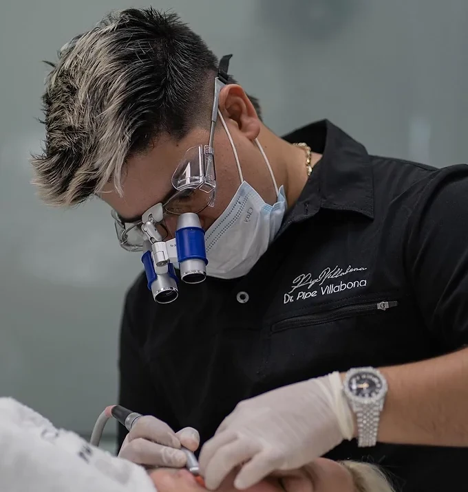

DR. PIPE VILLABONA · PORCELAIN VENEERS
Own your smile.
Porcelain veneers. Personal character. Meet the dentistry behind Real Smile.
REAL SMILEBUCARAMANGA, COLOMBIAEditorial image · Not a patient or treatment result
Your smile. Your personality. Every detail matters.

THE PERSON BEHIND YOUR CARE
Meet the doctor behind Real Smile.
Dr. Pipe Villabona’s practice presents porcelain veneers, aesthetic dentistry and a pathway for patients travelling to Colombia. Start with the clinical conversation, before choosing the appearance.
Meet the professional ↗THE REAL SMILE CHAPTERS
REAL SMILE / DENTAL TRAVELUSA + CANADA
Next stop: Bucaramanga.
01 / BEFORE THE JOURNEY
Start the conversation. Confirm the assessment and a personal plan with the practice.
02 / IN COLOMBIA
The clinical plan sets the visits and the care arrangements. Confirm these before booking travel.
03 / BACK HOME
Keep a clear follow-up contact and understand the maintenance your case requires.
A LITTLE MORE CLARITY
Before the next chapter.
Can I start from the USA or Canada?+
Ask the practice about remote consultation, language and coordination for your individual case.
How long will my treatment take?+
Your clinician determines the plan, visits and follow-up after assessment. Confirm this before arranging travel.
Is this calendar connected to the clinic?+
This is a demonstration of the proposed experience. No appointment is booked and no data is sent. Use the official channels for real availability.